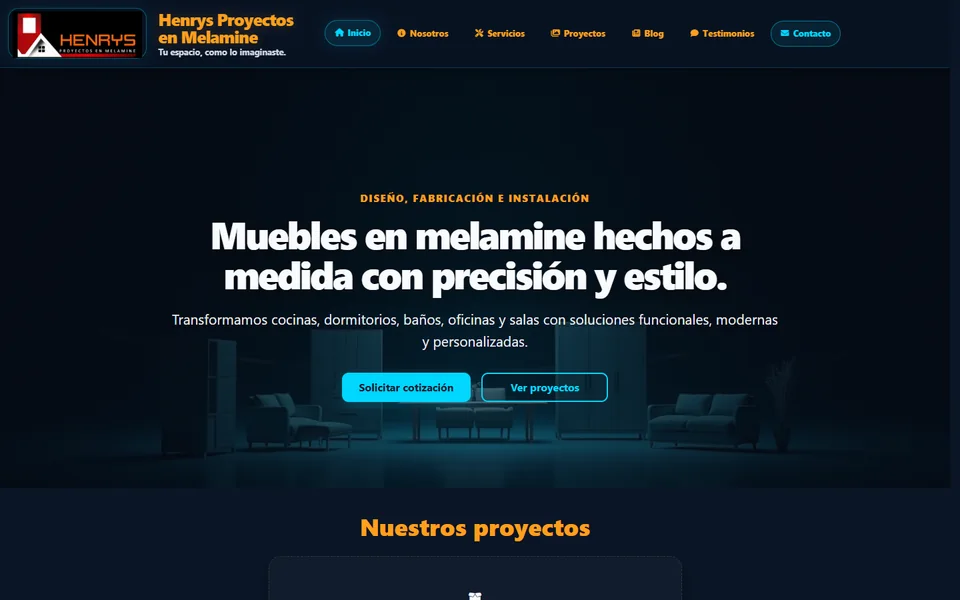

Aplicación web · PHP y MySQL
Henrys Proyectos en Melamine
Sitio comercial con portafolio, blog, acceso con Google y panel administrativo con roles y auditoría.
Mi aporte: arquitectura y desarrollo del sitio público, el panel administrativo, la seguridad y las pruebas.
Ver caso